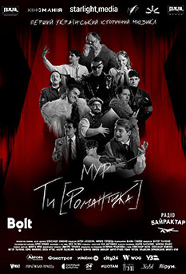

Вікові обмеження: 16+
Рік: 2025
Оригінальна назва: МУР. Ти [Романтика] в кіно
Режисер: кінозйомки: Андрій Баутьонок, Максим Онанко; Режисерка хореографії: Інна Матюшина; Режисер-постановник Олександр Хоменко
Мова: українська мова
Жанр: Мюзикл, Історичний
Тривалість: 1:44
Виробництво: Україна
Сценарій: Олександр Хоменко
Опис:
! УВАГА: це фільм-спектакль, тобто зафільмована театральна постановка мюзиклу, знята у видовищному
кіноформаті спеціально під великі екрани.
Фільм демонструє виставу у її сценічному вигляді, з акцентом на кінематографічній динаміці: використання крупних планів, зміни ракурсів, фокусування на деталях, які підсилюють емоційний вплив театральної гри. Монтаж додає нових ритмів, але зберігає автентичність і атмосферу живого виступу.
Хвильовий, Сосюра, Остап Вишня, Лесь Курбас, Михайль Семенко та Павло Тичина - на великому екрані. Вони повернулися, щоб нагадати, ким ми є. «Ти [Романтика]» — історичний мюзикл про митців, які жили, творили і загинули за те, щоб творити українською. Про тих, хто не боявся мріяти. Хто вірив, що в української культури - є майбутнє. Це перший в Україні оригінальний історичний мюзикл, який дає можливість побачити письменників минулого сторіччя як живих людей, а не імена з підручників. Історія розповідає про події у Будинку Слова в Харкові, в якому на початку ХХ століття радянська влада вбила сотні представників української творчої еліти. Створивши кіноверсію мюзиклу, команда МУР прагне започаткувати тренд на запис театральних постановок, щоб оцифрувати та зберегти нематеріальну культурну спадщину.